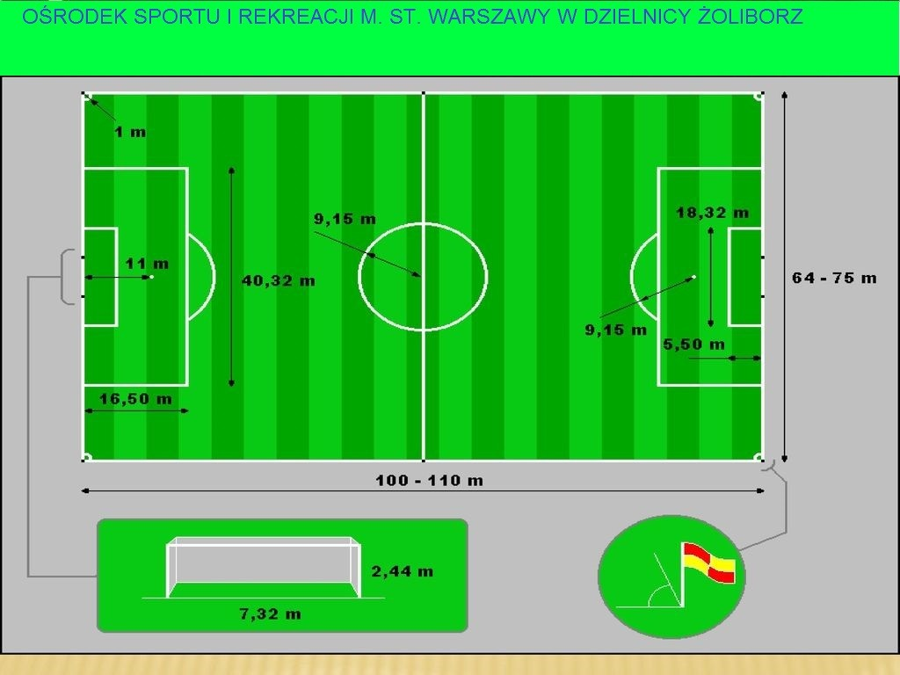
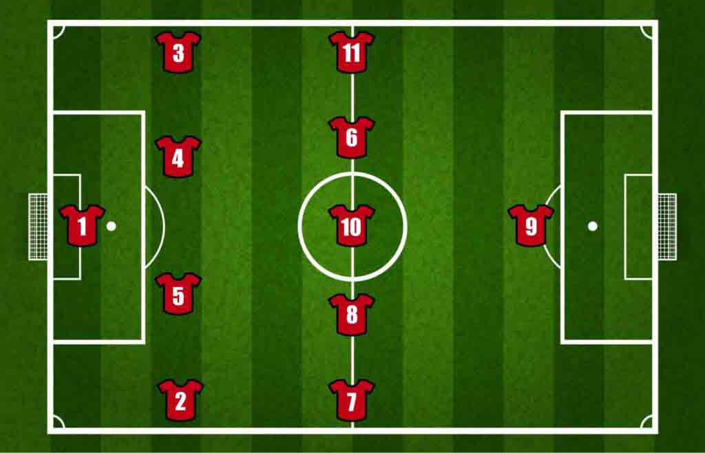

ZASADY GRY W PIŁKE NOŻNĄ
Piłka nożna to najpopularniejszy sport na świecie znana jest w każdym zakątku świata. Rodzaji piłki nożnej jest kilka ale ja będę mówił o tej najpopulaniejszej formie czyli o tej granej na trawiastym boisku o wymiarach 105x68.
Bramki w tym rodzaju piłki nożnej mają wymiar 244x732cm.

Na boisko piłkarskie wychodzą dwie drużyny pierwszy skład(11 zawodników: 10 zawodników z pola i bramkarz) oraz rezerwy czyli zawodnicy którzy mogą wejść i zmienić zawodników z pola.Podczas regulaminowego czasu gry czyli 90 minut + czas doliczony są dostępne po 5 zmian na drużyne i gdy zawodnik zejdzie z boiska to ie może już na nie wrócić. Bosiko jest podzielone na dwie połowy na każdej połowie jest pole karne przy bramce które wymiar 40,32x16,5m w którym jest jeszcze tzw. piątka z której wznawiana jest gra gdy piłka wyjdzie za bramke.Na boisku jest jeden zawodnik który ma możliwość łapania piłki w ręcę we własnym polu karnym.
TAKTYKA
każda drużyna piłkarska ma swoją taktyke i swoje ustawienie są te popularniejsze (takie jak 4-3-3 4-4-2) i te mniej popularne (np.:5-2-3) oraz takie które nie są w ogóle używane (np.:8-1-1,2-8).Każda drużyna ma swojego trenera, który ma swoja taktykę którą przekazuje swoim zawodniką. Jedni z lepszych trenerów to Pep Guardiola i Alex Ferguson. Styl gry ich drużyn przeszedł do historii a tym bardziej era tici taci czyli era gdy Pep Guardiola prowadził Barcelone która według mnie w tamtym czasie była najlepszą drużyną jaką dało się stworzyć i nigdy im nikt nie dorówna (jestem fanem Barcelony).
W piłce nożnej są 4 podstawowe pozycje bramkarz, obrońca, pomocnik, napastnik. Każda z tych pozycji ma swoje podpozycje oprócz bramkarza oczywiście. Podpozycje obrony to środkowy obrońca(może też być lewy,prawy lub tzw. ostatni stoper), prawy obrońca, lewy obrońca, prawy wahadłowy, lewy wahadłowy. Podpozycje pomocników to: środkowy pomocnik, środkowy pomocnik ofensywny, środkowy pomocnik defensywny, prawy pomocnik, lewy pomocnik. Podpozycje napastników: napastnik, cofnięty napastnik,lewy skrzydłowy prawy skrzydłowy.
Każda z pozycji ma swój określony numer narzucony z góry tak jak poniżej na obrazku :
